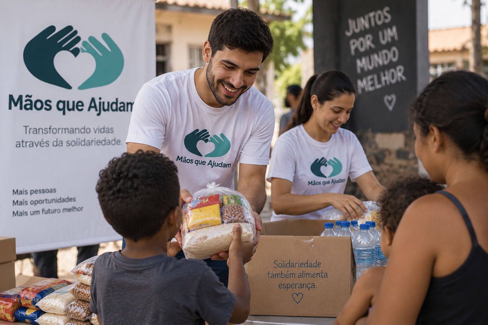

Sobre a ONG
A Mãos que Ajudam desenvolve ações sociais para apoiar pessoas e comunidades que precisam de ajuda.

Contato
E-mail: contato@maosqueajudam.org
Telefone: (11) 99999-9999
Endereço: São Paulo - SP
Transformando vidas através da solidariedade.
A Mãos que Ajudam desenvolve ações sociais para apoiar pessoas e comunidades que precisam de ajuda.

E-mail: contato@maosqueajudam.org
Telefone: (11) 99999-9999
Endereço: São Paulo - SP